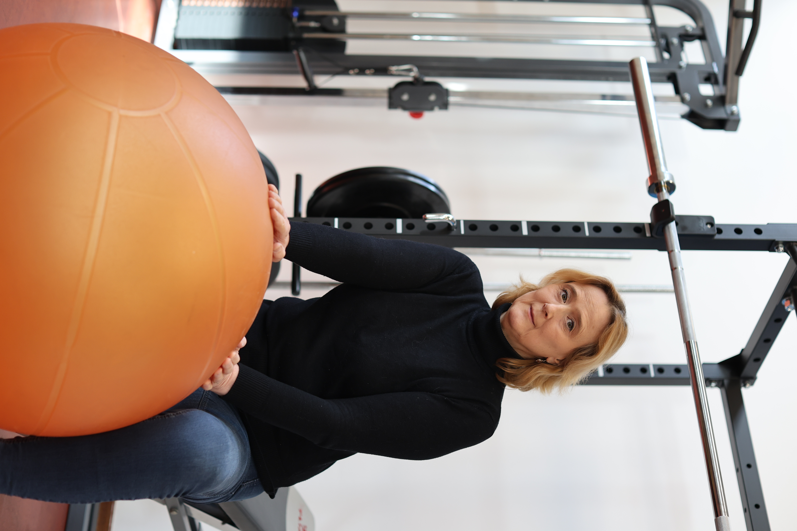

Een gezondere leefstijl begint niet met afkeur of dwang. Het begint met begrijpen wat je nodig hebt. Als lifestyle coach in Venlo en Limburg (praktijk in Grubbenvorst) kijk ik samen met jou naar beweging, voeding, ontspanning én gedachten. Alles hangt samen.

Lifestyle coaching is niet hetzelfde als diëten of fitnessprogramma’s. Het gaat dieper. Het gaat om begrijpen hoe jij in elkaar zit, wat je energie geeft, en hoe je een manier van leven kunt creëren die aanvoelt als thuis.
Holistische coaching betekent: we kijken niet alleen naar één aspect (bijv. alleen voeding), maar naar je geheel. Hoe beweeg je? Hoe eet je? Hoe rust je? Hoe denk je over jezelf? Alles beïnvloedt alles.
Wij werken samen aan vier essentiële gebieden:
Sabine combineert deze aanpak met haar achtergrond als fysiotherapeute, waardoor ze niet alleen naar gedachten kijkt maar ook naar wat je lichaam je vertelt.
Het punt: Je hoeft niet alles tegelijk te veranderen. We starten klein, met wat zich aanvoelt, en bouwen stap voor stap.
Je bent geen aparte onderdelen. Je bent één geheel. Een stressvolle dag maakt dat je anders eet. Slecht slapen geeft geen zin in bewegen. Negatieve gedachten trekken energie. Dit zijn geen zwaktes, het zijn normale verbindingen.
Coaching die enkel naar één aspect kijkt, mist het grotere plaatje. En dat leidt tot frustratie. Je eet gezond, maar voelt je niet beter. Je gaat sporten, maar het voelt als straf. Dat is niet wat we willen.
Lifestyle coaching is geen online programma dat iedereen hetzelfde aanraadt. Jij bent uniek. Je geschiedenis, je wensen, je omstandigheden. Alles telt. In de begeleiding luisteren we echt, en we bouwen samen een plan dat past. Bij jou, niet tegen je.
Bij het werken aan gedachtenpatronen kunnen technieken uit ACT therapie een waardevolle aanvulling zijn.
Dit is geen korte fix. Het is het begin van een manier van leven die bij jou past.
Herken je jezelf in een of meer van onderstaande punten?
Je bent moe, zelfs na rust. Je wilt meer energie, maar weet niet hoe je daar kunt komen.
Maar niet via diëten of straf. Je zoekt iets duurzaams, iets dat voelt als zorg in plaats van dwang.
Werken staat veel hoger dan rust. Je weet niet hoe je “uit kunt zetten”. Je voelt je opgejagd.
Slaap ontgaat je, en dat tast alles aan. Je zoekt manieren om beter tot rust te komen.
Je voelt je niet goed over jezelf. Je wilt iemand die je begrijpt en ondersteunt, niet beoordeelt.
En je wilt begrijpen hoe je daar beter mee kunt omgaan. Sabine ziet het geheel: fysiek én mentaal. Lees meer over coaching bij chronische ziekte.
Een traject duurt doorgaans 3 tot 6 maanden, met wekelijkse of tweewekelijkse sessies. Dit geeft je de ruimte om stap voor stap te leren en verandering te ervaren. Het doel is dat je na afloop zelf kunt doorgaan.
Lifestyle coaching is geen dieet. We kijken naar wat bij jou past en waar je naartoe wilt. Stap voor stap bouwen we daar samen aan. Dat voelt heel anders dan regels volgen.
Coaching draait om kwaliteit, niet kwantiteit. Met één sessie per week of per twee weken kun je al merkbare stappen zetten. Daarnaast krijg je oefeningen voor thuis.
Sabine is fysiotherapeute en begrijpt de complexiteit van chronische aandoeningen. Ze past de coaching aan op wat jij aankan. Veel mensen ervaren dat dit hen helpt om beter met hun aandoening om te gaan.
De kosten hangen af van jouw persoonlijke situatie en de duur van het traject. Neem contact op voor een gratis kennismakingsgesprek — dan bespreken we samen wat bij jou past.
Laten we samen kijken wat voor jou mogelijk is. Begin met een gratis gesprek over waar je staat en waar je heen wilt.
Plan een afspraak →Of bel direct: 06 425 590 22 · info@sabinevanderelsen.nl